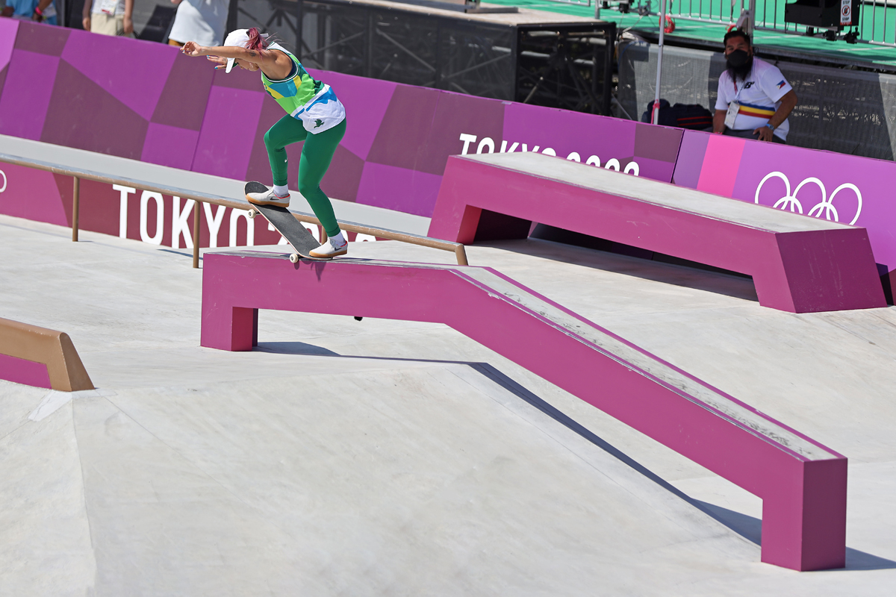
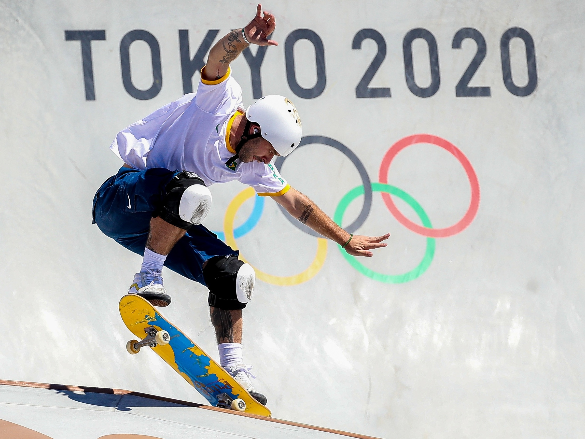
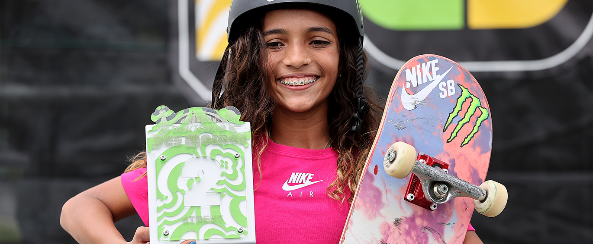

As Olimpíadas de Tóquio em 2021 marcaram a estreia do skate como esporte olímpico. O skate foi dividido em duas disciplinas: street e park. Na categoria street, os atletas competiram em uma pista que simula elementos urbanos, como escadas e corrimãos. Já na categoria park, a pista tem uma forma de piscina com transições e rampas. Na competição masculina de street, o japonês Yuto Horigome conquistou a medalha de ouro, seguido pelo brasileiro Kelvin Hoefler, que ganhou a prata, e pelo norte-americano Jagger Eaton, que ficou com o bronze. No feminino, a japonesa Momiji Nishiya venceu o ouro, Rayssa Leal, do Brasil, ficou com a prata, e a japonesa Funa Nakayama levou o bronze. Na categoria park masculina, o australiano Keegan Palmer ganhou o ouro, enquanto o brasileiro Pedro Barros conquistou a prata e o norte-americano Cory Juneau ficou com o bronze. No feminino, a japonesa Sakura Yosozumi garantiu o ouro, a japonesa Kokona Hiraki levou a prata, e a britânica Sky Brown conquistou o bronze. As Olimpíadas de Tóquio 2021 trouxeram visibilidade e reconhecimento ao skate como uma disciplina atlética legítima, além de apresentar ao mundo a habilidade e a criatividade dos skatistas de todo o mundo.
  